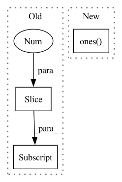

Pattern ID :39897
Before Change
Angle Phi between planes: (Ca{-1}, N, Ca{0}) and (Ca{0}, N{+1}, C_a{+1})
preds_ = preds.detach()
ns = torch.transpose(preds_, -1, -2)[:, N_mask][:, 1:]
cs = torch.transpose(preds_, -1, -2)[:, CA_mask]
// compute phis and count lower than 0s
phis_count = []
for i in range(cs.shape[0]):After Change
if C_mask is not None:
c_terms = preds_[:, C_mask]
else:
c_terms = preds_[:, (torch.ones( *N_mask.shape) -N_mask-CA_mask).bool() ]
// compute phis and count lower than 0s
phis_count = []
for i in range(preds.shape[0]):In pattern: SUPERPATTERN
Frequency: 4
Non-data size: 3
Instances Fragment ID: 113409127
Project Name: lucidrains/alphafold2
Commit Name: cfbef45a992da0743296525175e912ef1fbd8d63
Time: 2021-02-04
Author: ericalcaide1@gmail.com
File Name: alphafold2_pytorch/utils.py
M Class Name: AnonimousClass
N Class Name: AnonimousClass
M Method Name: fix_mirrors_torch(6)
N Method Name: fix_mirrors_torch(5)
M Parent Class:
N Parent Class:
M File Name: alphafold2_pytorch/utils.py
N File Name: alphafold2_pytorch/utils.py
M Start Line: 386
M End Line: 394
N Start Line: 380
N End Line: 406
Before Change
// mask so image has full attention to text, but causal along axis
i, j = dots_image.shape[-2:]
mask = torch.ones(i, j, device = device).triu_(j - i + 1).bool()
dots_image.masked_fill_(mask, mask_value)
// attention.After Change
// mask so image has full attention to text, but causal along axis
bh, i, j = dots_image.shape
causal_mask = torch.ones( i, img_size, device = device) .triu_(img_size - i + 1).bool()
causal_mask = repeat(causal_mask, "i j -> b i j", b = bh)
mask = repeat(mask, "b j -> (b r) i j", r = (bh // b), i = i) Fragment ID: 113409124
Project Name: lucidrains/dalle-pytorch
Commit Name: c27f48c4373942167a0cc2ac2238f67af2479fe3
Time: 2021-02-14
Author: lucidrains@gmail.com
File Name: dalle_pytorch/attention.py
M Class Name: SparseAxialCausalAttention
N Class Name: SparseAxialCausalAttention
M Method Name: forward(3)
N Method Name: forward(3)
M Parent Class: nn.Module
N Parent Class: nn.Module
M File Name: dalle_pytorch/attention.py
N File Name: dalle_pytorch/attention.py
M Start Line: 191
M End Line: 241
N Start Line: 201
N End Line: 259
Before Change
def compute_accumulated_transmittance(alphas):
accumulated_transmittance = torch.cumprod(alphas, 1)
accumulated_transmittance[:, 1:] = accumulated_transmittance[:, :-1] // shifting because summing from j=1 to j=i-1
accumulated_transmittance[:, 0] = 1.
return accumulated_transmittance
After Change
def compute_accumulated_transmittance(alphas):
accumulated_transmittance = torch.cumprod(alphas, 1)
return torch.cat((torch.ones( (accumulated_transmittance.shape[0], 1), device=alphas.device) ,
accumulated_transmittance[:, :-1]), dim=-1)
Fragment ID: 113409131
Project Name: maximevandegar/papers-in-100-lines-of-code
Commit Name: 725f4291ef915ed7df9931a6901a304acba9821f
Time: 2023-01-05
Author: maxvandegar@gmail.com
File Name: NeRF_Representing_Scenes_as_Neural_Radiance_Fields_for_View_Synthesis/nerf.py
M Class Name: AnonimousClass
N Class Name: AnonimousClass
M Method Name: compute_accumulated_transmittance(1)
N Method Name: compute_accumulated_transmittance(1)
M Parent Class:
N Parent Class:
M File Name: NeRF_Representing_Scenes_as_Neural_Radiance_Fields_for_View_Synthesis/nerf.py
N File Name: NeRF_Representing_Scenes_as_Neural_Radiance_Fields_for_View_Synthesis/nerf.py
M Start Line: 73
M End Line: 76
N Start Line: 70
N End Line: 72
Before Change
def _rel_shift(self, x):
"""向左shift让右上角都是0, 对角线是同一个值，[btz, n_head, q_len, k_len]
"""
zero_pad_shape = (x.size(0), 1) + x.size()[2:]
zero_pad = torch.zeros(zero_pad_shape, device=x.device, dtype=x.dtype)
x_padded = torch.cat([zero_pad, x], dim=1)
x_padded_shape = (x.size(1) + 1, x.size(0)) + x.size()[2:]After Change
x_padded = x_padded.view(*x.size()[:2], k_len + 1, q_len)
x = x_padded[:,:,1:,:].view_as(x)
if zero_triu:
ones = torch.ones( (q_len, k_len), device=x.device)
x = x * torch.tril(ones, k_len - q_len)[None,None,:,:]
return x
def forward(self, w, cat, r, attention_mask=None): Fragment ID: 113409128
Project Name: tongjilibo/bert4torch
Commit Name: e7a71b5780f0c193c2575f5dec687cb004c50ab2
Time: 2022-05-23
Author: tongjilibo@163.com
File Name: bert4torch/layers.py
M Class Name: RelPartialLearnableMultiHeadAttn
N Class Name: RelPartialLearnableMultiHeadAttn
M Method Name: _rel_shift(3)
N Method Name: _rel_shift(2)
M Parent Class: MultiHeadAttentionLayer
N Parent Class: MultiHeadAttentionLayer
M File Name: bert4torch/layers.py
N File Name: bert4torch/layers.py
M Start Line: 532
M End Line: 539
N Start Line: 535
N End Line: 546